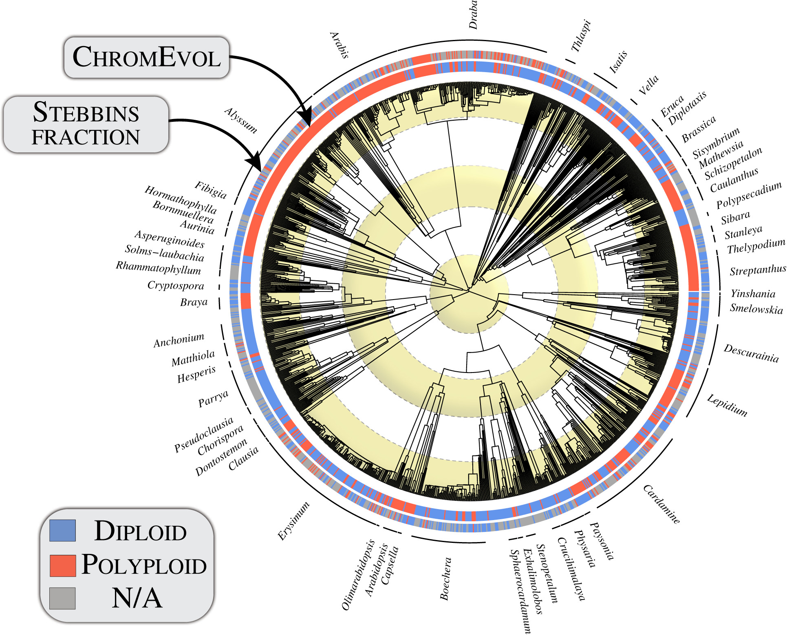
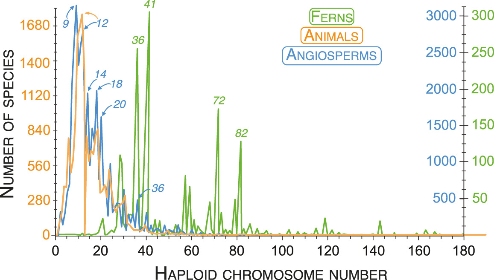
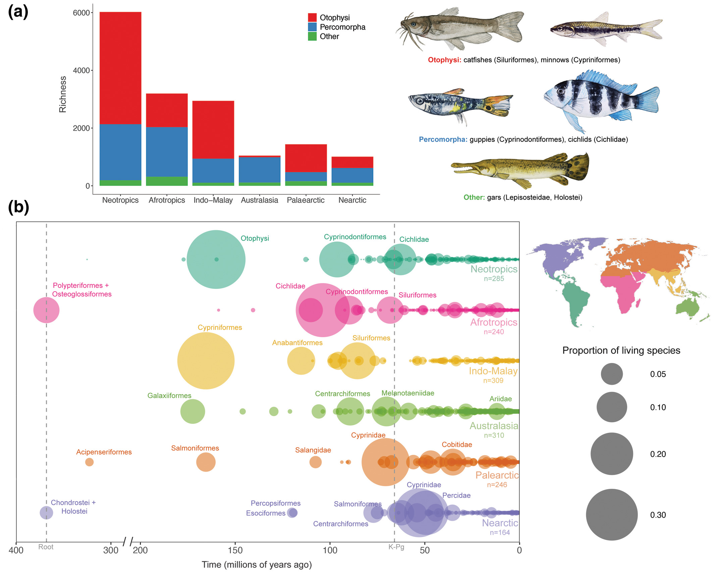
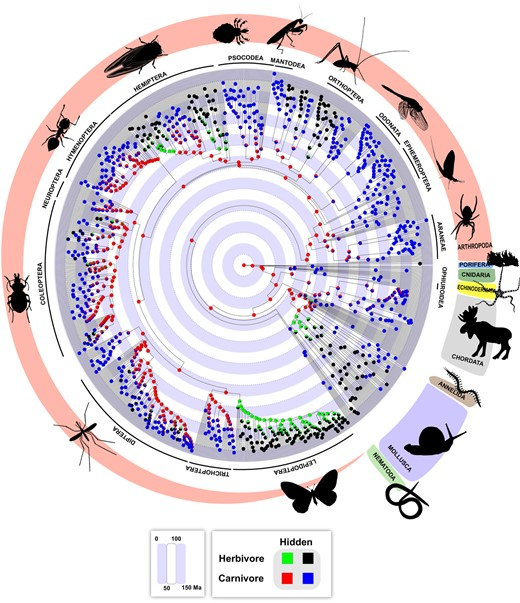
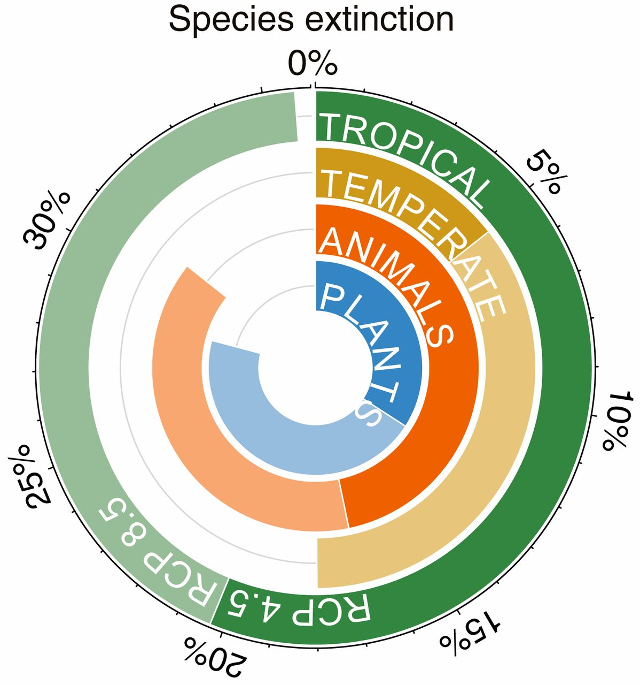

<!-- ============================================ -->
<!--             Side By Side Reverse             -->
<!-- ============================================ -->

<section id="sbsr-579" class="cs-top-section">
    <div class="cs-container">
        <div class="cs-animated-cards">
            <div class="cs-columns">
                <div class="cs-column active" onclick="toggleContent('biology-content', this)"><h5 class="cs-title">Biology</h5></div>
                <div class="cs-column-content open" id="biology-content">
                    <div>
                        <h3 class="cs-title">Biology</h3>
                        <p class="cs-text">Ongoing projects in general bioinformatics, phylogenetics, and local extinctions not only reveal factors behind evolutionary relationships, but also explore the implications of climate change on biodiversity and its different structures! We encourage all students interested in biology to join us! We would love to hear your ideas and their possible implementation into an official project of the lab! Wouldn’t that look cool on your CV?</p>  
                    </div>
                    <picture class="cs-picture">
                        <!--Mobile Image-->
                        <source media="(max-width: 600px)" srcset="../assets/images/polyploidsincrease.jpg">
                        <!--Tablet and above Image-->
                        <source media="(min-width: 601px)" srcset="../assets/images/polyploidsincrease.jpg">
                        
                    </picture>
                </div>
                <div class="cs-column" onclick="toggleContent('machine-learning-content', this)"><h5 class="cs-title">Machine learning methods development and applications</h5></div>
                <div class="cs-column-content" id="machine-learning-content">
                  <div>
                    <h3 class="cs-title">ML methods</h3>
                    <p class="cs-text">Our lab pioneers ML (machine learning) methods for various applications, from biology to environmental science. Here, you can contribute to the development of cutting-edge algorithms while applying them to real-world challenges, like predicting climate trends and its implications in biodiversity, and the prediction of species extinction trends. </p>  
                </div>
                <picture class="cs-picture">
                    <!--Mobile Image-->
                    <source media="(max-width: 600px)" srcset="../assets/images/animalchromsomecount.jpg">
                    <!--Tablet and above Image-->
                    <source media="(min-width: 601px)" srcset="../assets/images/animalchromsomecount.jpg">
                    
                </picture>
                </div>
                <div class="cs-column" onclick="toggleContent('data-science-content', this)"><h5 class="cs-title">Data science</h5></div>
                <div class="cs-column-content" id="data-science-content">
                  <div>
                    <h3 class="cs-title">Data science</h3>
                    <p class="cs-text">Data science forms the backbone of our research, whether it's analyzing biological data, predicting patterns behind species extinctions, or extracting meaningful data from letters written by students demanding social justice in academia! Join our data science team to help continue our revolutionary work!</p>  
                </div>
                <picture class="cs-picture">
                    <!--Mobile Image-->
                    <source media="(max-width: 600px)" srcset="../assets/images/evolutionarytimebestexplains.jpg">
                    <!--Tablet and above Image-->
                    <source media="(min-width: 601px)" srcset="../assets/images/evolutionarytimebestexplains.jpg">
                    
                </picture>
                </div>
                <div class="cs-column" onclick="toggleContent('diversity-content', this)"><h5 class="cs-title">Diversity, inclusion, and social justice initiative</h5></div>
                <div class="cs-column-content" id="diversity-content">
                  <div>
                    <h3 class="cs-title">Diversity, inclusion, and social justice initiative</h3>
                    <p class="cs-text">Our commitment to diversity and inclusion isn't a separate initiative but a part of our lab's DNA. We believe that diverse perspectives are an essential part of the drivers behind the research of the future. As a lab member, you will most likely actively participate in research that empowers diversity and inclusion efforts, making the potential for a stronger community a reality! Examples include focus on underserved and underrepresented student teaching and success, empowering them with tools necessary for the pervasive era of information! Additionally, with a lab focus on social justice, we aim to address social disparities through our interdisciplinary research approaches.  </p>  
                </div>
                <picture class="cs-picture">
                    <!--Mobile Image-->
                    <source media="(max-width: 600px)" srcset="../assets/images/Evolutionofdiet.jpg">
                    <!--Tablet and above Image-->
                    <source media="(min-width: 601px)" srcset="../assets/images/Evolutionofdiet.jpg">
                    
                </picture>
                </div>
                <div class="cs-column" onclick="toggleContent('climate-change', this)"><h5 class="cs-title">Climate change</h5></div>
                <div class="cs-column-content" id="climate-change">
                  <div>
                    <h3 class="cs-title">Climate change</h3>
                    <p class="cs-text">Climate change is a critical issue of immense repercussions that intersects with our research aims. Join us to work on projects that explore the impact of climate change on biodiversity and help us continue to drive environmental conservation efforts.</p>  
                </div>
                <picture class="cs-picture">
                    <!--Mobile Image-->
                    <source media="(max-width: 600px)" srcset="../assets/images/Recentresponsestoclimate.jpg">
                    <!--Tablet and above Image-->
                    <source media="(min-width: 601px)" srcset="../assets/images/Recentresponsestoclimate.jpg">
                    
                </picture>
                </div>
                <!-- Repeat structure for other columns... -->
            </div>
        </div>
        <div class="cs-content">
            <h1 class="cs-title">Research</h1>
            <p class="cs-text">
                We use bioinformatic and machine learning methods on big datasets to solve biology's long-standing questions in different fields. Our research spans evolutionary biology, conservation, ecology, and climate change, published in academic journals. As a hub for high-quality research, we invite collaboration with students and researchers passionate about leveraging large datasets to answer diverse questions in biology and beyond. In this section, you will find information about our papers, projects, and areas of research.
            </p>
            <p class="cs-text">
                Ongoing projects in general bioinformatics, phylogenetics, and local extinctions not only reveal factors behind evolutionary relationships, but also explore the implications of climate change on biodiversity and its different structures! We encourage all students interested in biology to join us! We would love to hear your ideas and their possible implementation into an official project of the lab! Wouldn’t that look cool on your CV?            
            </p>
        </div>
    </div>
</section>